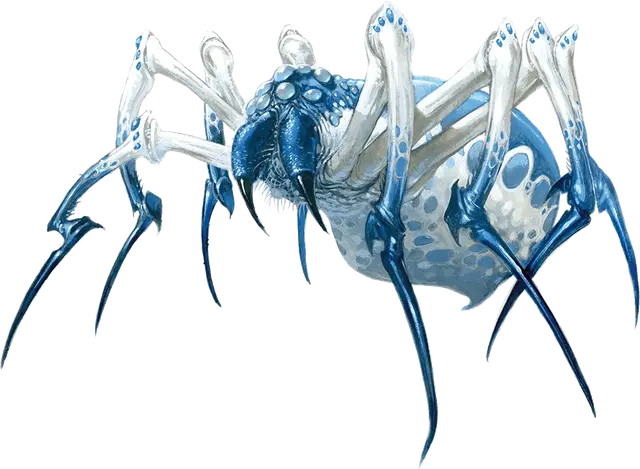

Исчезающий паук
Phase Spider
Большой Монстр, без мировоззрения

Класс Доспеха 13 (природный доспех)
Хиты 32 (5к10 + 5)
Скорость 30 футов, лазая 30 футов
| мод | спас | ||
|---|---|---|---|
| СИЛ | 15 | +2 | +2 |
| ЛОВ | 15 | +2 | +2 |
| ТЕЛ | 12 | +1 | +1 |
| мод | спас | ||
|---|---|---|---|
| ИНТ | 6 | −2 | −2 |
| МДР | 10 | +0 | +0 |
| ХАР | 6 | −2 | −2 |
Навыки Скрытность +6
Чувства тёмное зрение 60 футов, пассивное Восприятие 10
Опасность 3 (700 опыта)
Бонус мастерства +2
Среда обитания Город, Лес, Луг, Подземье, Пустыня, Холмы
Особенности
Эфирный скачок. Паук может бонусным действием магическим образом переместиться с Материального Плана на Эфирный План, или наоборот.
Паучье лазание. Паук может лазать по сложным поверхностям, включая потолки, без совершения проверок характеристик.
Хождение по паутине. Паук игнорирует ограничения перемещения, вызванные паутиной.
Действия
Укус. Рукопашная атака оружием: +4 к попаданию, досягаемость 5 футов, одно существо. Попадание: Колющий урон 7 (1к10 + 2), и цель должна совершить спасбросок Телосложения Сл 11, получая урон ядом 18 (4к8) при провале, или половину этого урона при успехе. Если урон ядом уменьшает хиты цели до 0, цель остается стабилизированной, но отравленной на 1 час, даже если позже восстановит хиты, и она парализована, пока отравлена таким образом.
Описание
Исчезающий паук обладает магической способностью переходить на Эфирный План и возвращаться обратно. Он появляется из ниоткуда и быстро исчезает после нападения. Из-за того, что он перемещается по Эфирному Плану перед возвращением на Материальный План, кажется, что он телепортируется.